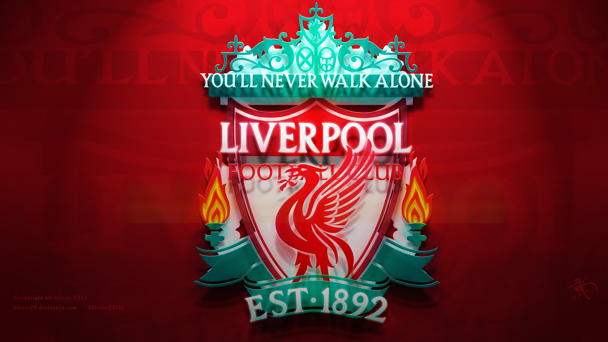

Liverpool F.C. was founded following a dispute between the Everton committee and John Houlding, club president and owner of the land at Anfield.
After eight years at the stadium, Everton relocated to Goodison Park in 1892 and Houlding founded Liverpool F.C. to play at Anfield.
FOUNDER
John Houlding was an English businessman, most notable for being Lord Mayor of Liverpool, and the founder of Liverpool Football Club. In November 2018, Houlding was commemorated with a bronze bust outside Anfield to mark the 125th anniversary of Liverpool F.C
SCOTTISH FOOTBALLER AND MANAGER OF LFC
William Shankly OBE was a Scottish football player and manager, who is best known for his time as manager of Liverpool. Shankly brought success to Liverpool, gaining promotion to the First Division and winning 3 League Championships and the UEFA Cup.
MANAGER OF LFC
Jürgen Norbert Klopp is a German professional football manager and former player who is the manager of Premier League club Liverpool. He is widely regarded as one of the best managers in the world. Klopp spent most of his playing career at Mainz 05.